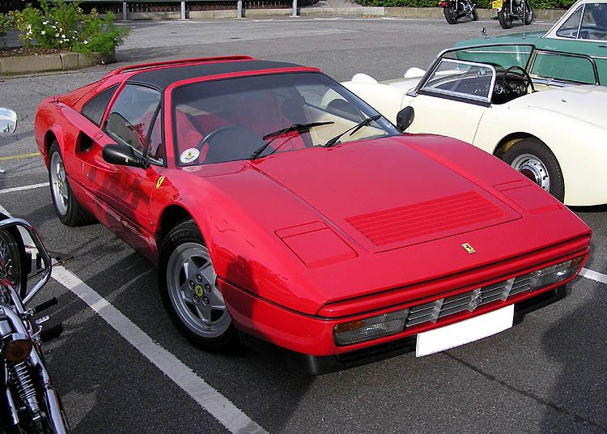
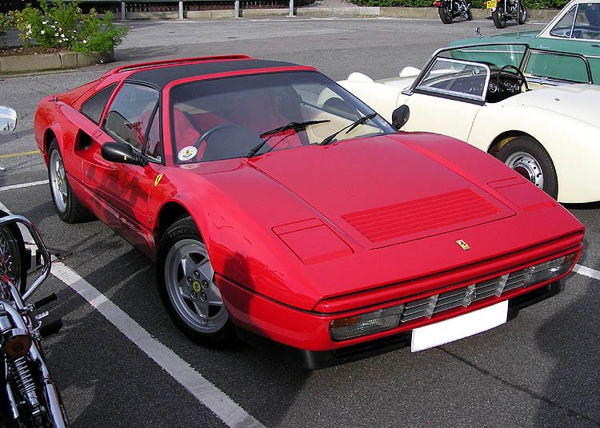

Ferrari Mondial

- Ferrari Mondial — спортивний автомобіль з посадковою формулою 2+2, що
виготовляся італійською компанією Ferrari з 1980 по 1993 рік. Вона прийшла на зміну кутастої 208/308
GT4. Назва "Mondial" походить від історії Феррарі - від назви знаменитого гоночного автомобіля початку
1950-х 500 Mondial. Незважаючи на те, що дизайн його попередника розляло ательє Bertone, дизайн Ferrari
Mondial розробляла Pininfarina. Автомобіль являв собою середньомоторне купе або кабріолет з двигуном V8.
Mondial був виготовлений в досить великих для Ferrari кількостях, всього за 13 рокув було виготовлено
більш ніж 6800 екземплярів, що робить його одним із найбільш комерційно успішних моделей Ferrari.
На головну

 
